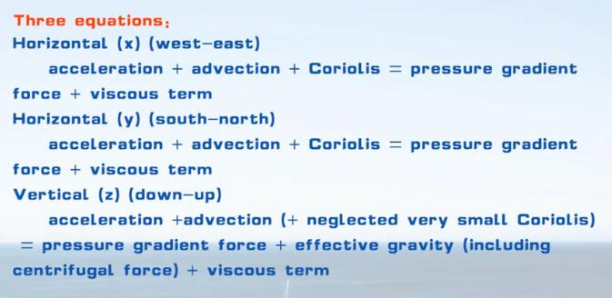
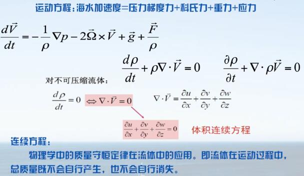

Note#03 Fundamentals of Physical Oceanography
# 第四章：海洋观测数据与观测方法
# 海洋观测方法
- 拉格朗日 —— 流动测量，如漂流的浮标。
- 欧拉 —— 在固定位置测量，如卫星图片。
- 时间序列 —— 一段事件内的测量，通常是有规律的间隔。
- 气候态 —— 多年平均值。
# 卫星海洋遥感
利用电磁波与大气和海洋的相互作用原理，从卫星平台观测和研究海洋的学科分支。

# 观测平台
科考船，商船，浮标，固定系泊设备，海岸站（雷达），水下滑翔机（操纵）。
# 传感器
温度：热敏电阻
盐度：电导率传感器
压力：石英传感器
（CTD：携带 T、S、P 和辅助传感器的仪器）
（XBT：消耗品温度探头）
深度：高度计（声波或电磁波反射）
速度：电流表（带罗盘的机械式），声学多普勒流速计（由悬浮在水中的颗粒反射的声波），漂浮物（随水移动）
其他传感器：氧气、叶绿素荧光计、光学特性和辐射传感器
湍流仪
# 简单的数据分析方法
采样，采样频率，均值，异常，精度
时间变化，空间变化
绘图，分析，假设，验证
时空 Hovmoller 图，横坐标是空间精度，纵坐标是时间。
谱分析（傅里叶变换），频率分析。
# 数据描述性分析
从样本数据出发，概括分析数据的集中位置、分散程度、相互关联关系等，分析数据分布的正态或偏态特征。
# 回归分析
根据已得的试验结果以及以往的经验来建立统计模型，并研究变量间的相关关系，建立起变量之间关系的近似表达式，并由此对相应的变量进行预测和控制等。如 用最小二乘建立关系式。
# Empirical Orthogonal Function
经验正交分解，也称特征向量分析或主成分分析（PrincipalComponent Analysis）。
分析矩阵数据中的结构特征，提取主要数据特征量。把时空分开。
# 水团分析
TS 图，每个点对应盐度和温度，称为水型。
+ 体积，+ 时间
# 第五章：物理海洋方程
# 地转
控制海水运动的基本方程和边界条件
# 单位质量海水的运动方程
，速度的变化。
右侧给出作用力，获得海水的运动状况。
三个分量形式：
力有重力，浮力，风应力，引潮力，科氏力，摩擦力等等。
- 引起海水运动的力，如重力，压强梯度力，风应力，引潮力等。
- 海水运动后所派生出来的力，如科氏力，摩擦力等。
笛卡尔坐标系：
东西（纬向，zonal） x - 方向，东为正
南北（经向，meridional） y - 方向，北为正
垂向（vertical） z - 方向，上为正
离心力与引力比可忽略。
# 科氏力
是虚拟的力，由于人随地球旋转而观测到的偏转现象。
为地球角速度， 为纬度。地球自转的总量在局部垂直方向上的投影。
# 旋转刚性定理
Proudman-Taylor 定理。旋转效应的主要影响是产生垂直刚性。在快速旋转，均质流体中，这种效应可能非常强以至流体呈柱状运动；所有质点沿垂直轴同步运动，因而永远保持它们的垂直一致性。三维流体二维化。

# 基本方程
海水受力情况。
重力：为地心引力与离心力的合力，重力加速度是地理纬度与海平面向下的深度 z 的函数。
压强梯度力：与压强梯度呈比例。
摩擦力（切应力）：当两层流体相互运动时由分子粘滞性产生的，与垂向两层流体界面方向上的速度梯度呈正比。
引潮力：月球天体等产生的影响。
方程：地球流体力学课程中详细介绍。


Navier-Stokes equations：

边界：
- 海岸与海底的固体边界
运动学边界条件：海水垂直于边界的运动速度为 0，离边界越近切向速度越小。 - 与大气之间的流体边界
动力学边界条件：大气压力、风应力直接作用于海面，通过海面影响下部海水。
考虑特定问题时会简化以便求解。
惯性流：方程中只有科氏力一项，自由漂流。
周期
因为有摩擦力所以不闭合，形成螺旋状。
# Navier-Stokes 方程
# 连续介质假设
把由离散分子构成的实际流体看成是由连续且没有间隙的无数流体质点组成的。
流体质点指的是微观上足够大，宏观上足够小的流体分子团，其统计平均可以反应稳定的宏观数值。
有连续性假设后，就可以把离散分子的运动问题近似转化为连续充满整个空间的流体质点的运动问题，把描述流体物理性质的各种物理量视为随空间和时间变化的连续函数。
# 基本守恒定律
| 守恒定律 | 导出的基本方程 |
|---|---|
| 动量守恒 | 运动方程（纳维 - 斯托克斯方程） |
| 质量守恒 | 连续性方程 |
| 盐度守恒 | 盐度扩散方程 |
| 能量守恒：热量 | 热传导方程 |
| 能量守恒：机械能 | 波动方程 |
| 角动量守恒 | 涡度守恒 |